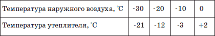
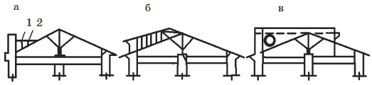

Ремонт и реконструкция крыш.

Виды и объемы ремонтных работ должны соответствовать как техническому состоянию самой крыши, так и техническому состоянию основных несущих сменяемых и несменяемых конструктивных элементов здания. Как отмечалось выше, основное назначение крыши здания – защита от влияния атмосферных осадков, особенно дождя, а также поддержание определенного тепловлажностного режима, способствующего продолжительной сохранности конструктивных элементов здания.
Виды ремонтных работ во многом зависят от технического состояния кровельного покрытия несущих элементов крыши, сроков их эксплуатации, остаточного срока эксплуатации здания в целом. Нормативный срок эксплуатации деревянных стропил согласно положению о проведении планово-предупредительного ремонта жилых и общественных зданий – 50 лет. Исключение составляют кровли со сложной конфигурацией с большим количеством ендов, парапетов и выступающих над кровлей элементов – дымоходов, вентиляционных шахт, канализационных стояков и т. д. Качественная эксплуатация крыш, своевременное проведение профилактического ремонта кровельного покрытия, создание нормального тепловлажностного режима чердачного перекрытия, периодическая обработка деревянных элементов антисептиком – все это способствует значительному увеличению срока эксплуатации элементов крыши.
Внимание!
Полную замену стропил необходимо производить лишь при достаточном техническом обосновании и при технически неудовлетворительном состоянии несущих элементов или при необходимости полной замены деревянных перекрытий на сборные железобетонные. Разборка крыши на долгий период времени крайне нежелательна, так как приводит к интенсивному износу основных несущих конструктивных элементов здания.
Наиболее часто выполняют следующие виды работ при ремонте крыш:
• частичную смену обрешетки;
• усиление обрешетки путем подшивки с внутренней стороны разгружающей системы, состоящей из досок, уложенных поперек обрешетки, и бруса, уложенного между стропильными ногами и прикрепленного к ним;
• частичную смену отдельных досок в зоне карнизных свесов и ендов;
• замену отдельных участков мауэрлата;
• смену в отдельных местах концов стропильных ног с постановкой «протезов»;
• усиление стропильных и накосных (диагональных) ног нашивкой с обеих сторон досок или установкой стоек, подкосов;
• усиление узлов сопряжения стропильных систем;
• установку дополнительных болтов, скоб, металлических либо деревянных накладок;
• создание эффективной вентиляции чердачного помеще ния.
Практика эксплуатации покрытых листовой сталью крыш в осенне-зимний период года показала, что подтаивание снега на кровле не происходит при разнице температур наружного воздуха и воздуха чердачного помещения на 2–4 °C. Требуемая разница температур достигается как устройством вентиляции чердачного помещения через слуховые окна, вентиляционные прикарнизные и приконьковые продухи, так и обеспечением достаточной теплоизоляции чердачного перекрытия, проходящих по чердаку трубопроводов, вентиляционных шахт и коробов.
Площадь сечения слуховых окон и продухов на крыше должна составлять не менее / – / площади чердачного перекрытия. При этом расположение указанных устройств должно обеспечить сквозное проветривание чердачного помещения, исключающее местный застой (воздушные мешки). Прикарнизные продухи выполняют в виде щели между кирпичом и кровлей (щелевые продухи) шириной 2–2,5 см или устраивают отдельные отверстия размером 20x20 см в прикарнизной части стены с обязательной установкой решетки. Приконьковые продухи делают либо в виде сплошной щели шириной 5 см либо в виде отдельных отверстий (флюгарок) через 6–8 м.
Прикарнизные приточные щели под карнизным свесом выполняют в такой технологической последовательности:
• в зоне карниза снимают кровлю из стальных листов и ограждение;
• разбирают сплошной деревянный настил карнизного свеса;
• нашивают подкладной сосновый клин заданных размеров на кобылку стропильной ноги;
• восстанавливают сплошной настил карнизного свеса с заменой отдельных поврежденных досок и кровлю карниза из стальных листов с настенными желобами и ограждением;
• герметизируют фальцы кровли, опорные части стоек ограждения.
При разнице температур выше установленного показателя необходимо установить источники поступления тепла в чердачное помещение, которыми могут быть:
• недостаточная теплозащита чердачного перекрытия;
• некачественная теплоизоляция трубопроводов отопления и горячего водоснабжения, вентиляционных каналов, шахт и т. п.
Толщину утеплителя чердачного перекрытия определяют измерением его температуры термометром, погруженным на глубину 2 см. Зависимость температуры утеплителя от температуры наружного воздуха приведена в табл. 14.
Если выявляется недостаточная теплоизоляция чердачного перекрытия, то производят ее усиление. Для этого выполняют засыпку. Уплотнившуюся засыпку взрыхляют, влажную удаляют или просушивают, а затем восстанавливают. Плитный утеплитель проверяют на влажность и при необходимости заменяют сухим материалом. Если уплотнитель не обеспечивает необходимую теплозащиту, то увеличивают толщину слоя; у наружной стены слой должен быть больше, чем в пролете. Для предохранения слоя теплоизоляции от разрушения по чердаку укладывают ходовые доски. Теплоизоляцию трубопроводов инженерного оборудования регулярно проверяют и ремонтируют. Двери и люки чердачного помещения утепляют и оборудуют эффективными уплотняющими прокладками.
Таблица 14. Зависимость температуры утеплителя от температуры наружного воздуха
Требование
При обнаружении ослабления соединений гребней и фальцев, наличии одинарных фальцев в водоотводящих устройствах, коррозии, пробоин, свищей, разрушении окраски или защитного слоя стальных листов и других дефектов их следует немедленно устранять. В процессе эксплуатации участки кровли с нарушенным окрасочным слоем необходимо окрашивать, не дожидаясь очередной общей окраски кровли.
Для обеспечения безопасной эксплуатации кровли предусматривают специальное устройство для закрепления страховочной веревки, которое монтируют на расстоянии 6–7 м от карнизного свеса. Данное устройство состоит из специально установленных болтов-кронштейнов диаметром 20 и длиной 550 мм. Болт-кронштейн на одном конце имеет метрическую резьбу длиной 150 мм, а на другом проушину диаметром 50 мм для пропуска трубы диаметром 40 мм. Болт-кронштейн также имеет в зоне проушины прижимную пластину, и при установке под нее укладывают один слой листовой резины, защищающей отверстие в стальной кровле от попадания атмосферных осадков в зону чердачного перекрытия. Болт-кронштейн прикрепляют к стропильной ноге. Соединение труб для закрепления страховочной веревки осуществляют сваркой или на резьбе.
Жилые дома старой постройки иногда имеют очень сложную конфигурацию в плане, что осложняет нормальную эксплуатацию кровельного покрытия, особенно в осенне-зимний период. Наличие выступающих парапетов, массивных ограждений кровель, множество выступающих выше кровли элементов инженерного оборудования, заниженный уклон кровель, пологие ендовы, отсутствие достаточно эффективной вентиляции чердачного пространства предопределяют преждевременный износ как самого кровельного покрытия, так и деревянных элементов стропильной системы и чердачного перекрытия.
Преобразование висячей системы в наклонную.В процессе многолетней эксплуатации ослабляются узловые соединения стропильной системы, что приводит к возникновению значительного распора в карнизной части наружных стен, и при потере шарнирной связи балок чердачного перекрытия с наружными стенами происходит разрушение стен. При капитальном ремонте дома с сохранением перекрытий большепролетные перекрытия разгружают вновь вводимой разгружающей системой, состоящей из стальных колонн или кирпичных столбов, которую одновременно используют и для преобразования стропильной системы.
Преобразование плана крыши.Здания старой постройки имеют разнообразную планировку и форму крыш, во мнотом зависящую как от внутренней планировки строения, так и от внешнего облика здания. Наряду с простыми односкатными и двускатными крышами часто встречаются сложные кровли с выступающими глухими парапетами. Сложные в плане кровли трудоемки в эксплуатации, и при значительных затратах на их содержание они менее долговечны.
При разработке проектно-сметной документации на модернизацию здания проектной организации необходимо произвести анализ технического состояния крыши, ее эксплуатационных качеств и на основе всестороннего анализа определить оптимальный вариант модернизации в зависимости от технического состояния стенового остова здания и дефектов кровли, а также обеспечить повышение эксплуатационных качеств кровельного покрытия, не нарушая внешнего архитектурного облика здания. Данная цель может быть достигнута путем устройства самостоятельно функционирующих участков кровли, которые могут быть выполнены как из однородного кровельного материала, так и комбинированными (плоские и скатные) рис. 80.

Рис. 80. Модернизация стропильной системы при глухих парапетах: а – до модернизации; б, в – модернизация в деревянном и железобетоном вариантах: 1 – наледь; 2 – снеговой мешок
Переустройство стропильной системы.В тех случаях, когда при ремонте крыши заменяют стальную кровлю другими кровельными материалами, выполняют полное или частичное переустройство стропильной системы, так как угол наклона существующих стропил под металлическую крышу находится в пределах 18–22°, а наиболее распространенные кровельные материалы – шифер и черепица – должны укладываться при уклоне свыше 27°. Увеличение уклона стропил при их удовлетворительном состоянии и достаточной несущей способности осуществляют путем их наращивания.
Изменение уклона односкатной стропильной системы при пролете до 5 м выполняют подъемом существующей стропильной ноги с установкой подкоса и ее удлинением. При пролете односкатной системы более 5 м уклон стропил изменяют путем их наращивания по высоте досками сечением 5x14 см, соединенными с существующей стропильной ногой с обеих сторон накладками из досок. Накладки устанавливают с шагом 1,4–1,5 м. Аналогичным образом изменяют уклон двускатной стропильной системы.
Изменение материала кровельного покрытия требует проверки несущей способности сохраняемых конструкций и при необходимости их усиления. Рассмотренные выше методы изменения уклона стропильной системы позволяют преобразовать вновь устраиваемую систему в ферму с перекрестной решетчатой стенкой, роль нижнего пояса в которой выполняет существующая стропильная нога, а верхнего пояса – вновь вводимая стропильная нога, создающая необходимый уклон в зависимости от применяемого кровельного материала. Во избежание передачи распора на кирпичную кладку карниза обеспечивают надежное сопряжение стропильных ног с коньковым прогоном. Бревенчатые и брусчатые стропильные ноги сопрягают в коньке врубкой в полдерева и стягивают болтами диаметром 12–16 мм. Дощатые стропильные ноги скрепляют гвоздями.
Стыки стропильных ног из бревен и бруса осуществляют прирубом и располагают на прогоне или на консоли. Расстояние между стропильными ногами принимают в пределах 1,2–1,5 м и определяют расчетом, исходя из несущей способности принятого сечения на прочность и жесткость. При значительной ширине здания для уменьшения расчетного сечения стропильной ноги, а также для увеличения пространственной жесткости стропильной системы ставят подкосы, сопряжение которых со стропильными ногами осуществляют лобовыми врубками и креплением стальными скобами диаметром 10–12 мм. При одностороннем подкосе устанавливают распорки. Для уменьшения расчетной длины накосной (диагональной) ноги на расстояние 1,5–2 м от угла здания под нее устанавливают деревянную шпренгельную формочку.
В качестве основания под кровлю из стальных листов или шиферную кровлю выполняют обрешетку из бруса сечением 5x5 см. При кровле из стальных листов под лежачие фальцы вдоль коньков, спусков и ендов укладывают сплошной настил из досок. При рулонной кровле выполняют двойной настил – нижний (рабочий) существующий и вновь вводимый. Стропильные ноги устанавливают с шагом 80–90 см, под них монтируют ребра жесткости и затем с обеих сторон стропильных ног под углом 45° перекрестно и разреженно прибивают гвоздями доски толщиной 2,5 см.